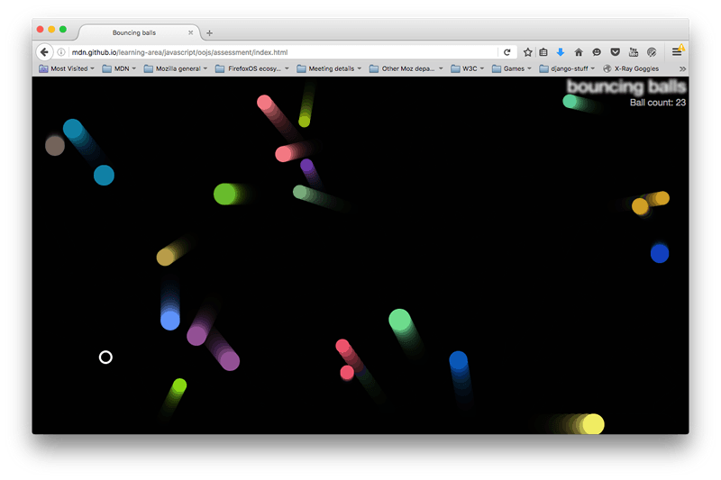

{{LearnSidebar}}{{PreviousMenuNext(“Learn/JavaScript/Objects/Object_building_practice”, "“,”Learn/JavaScript/Objects")}}
In this assessment, you are expected to use the bouncing balls demo from the previous article as a starting point, and add some new and interesting features to it.
| Prerequisites: | Before attempting this assessment you should have already worked through all the articles in this module. |
|---|---|
| Objective: | To test comprehension of JavaScript objects and object-oriented constructs |
To get this assessment started, make a local copy of index-finished.html, style.css, and main-finished.js from our last article in a new directory in your local computer.
Alternatively, you could use a site like JSBin or Glitch to do your assessment. You could paste the HTML, CSS and JavaScript into one of these online editors. If the online editor you are using doesn’t have separate JavaScript/CSS panels, feel free to put them inline <script>/<style> elements inside the HTML page.
Note: If you get stuck, then ask us for help — see the {{anch(“Assessment or further help”)}} section at the bottom of this page.
A couple of pointers before you get started.
Our bouncy ball demo is fun, but now we want to make it a little bit more interactive by adding a user-controlled evil circle, which will eat the balls if it catches them. We also want to test your object-building skills by creating a generic Shape() object that our balls and evil circle can inherit from. Finally, we want to add a score counter to track the number of balls left to capture.
The following screenshot gives you an idea of what the finished program should look like:

To give you more of an idea, have a look at the finished example (no peeking at the source code!)
The following sections describe what you need to do.
First of all, change your existing Ball() constructor so that it becomes a Shape() constructor and add a new Ball() constructor:
Shape() constructor should define the x, y, velX, and velY properties in the same way as the Ball() constructor did originally, but not the color and size properties.exists, which is used to track whether the balls exist in the program (have not been eaten by the evil circle). This should be a boolean (true/false).Ball() constructor should inherit the x, y, velX, velY, and exists properties from the Shape() constructor.color and a size property, like the original Ball() constructor did.Ball() constructor’s prototype and constructor appropriately.The Ball prototype’s collisionDetect() method needs a small update. If the code were kept as-is, the EvilCircle would start eating the bouncing balls by setting the exists property to false. And that would reduce the number of balls involved in collision detection. A ball needs to be considered for collision detection only if the exists property is true. So, replace the existing collisionDetect() code with the following code:
Ball.prototype.collisionDetect = function() {
for (let j = 0; j < balls.length; j++) {
if (!(this === balls[j]) && balls[j].exists) {
const dx = this.x - balls[j].x;
const dy = this.y - balls[j].y;
const distance = Math.sqrt(dx * dx + dy * dy);
if (distance < this.size + balls[j].size) {
balls[j].color = this.color = 'rgb(' + random(0, 255) + ',' + random(0, 255) + ',' + random(0, 255) +')';
}
}
}
}As discussed above, the only addition is to check if the ball exists — by using balls[j].exists in the if conditional.
The ball draw() and update() method definitions should be able to stay exactly the same as they were before.
You also need to add a new parameter to the new Ball() ( ... ) constructor call — the exists parameter should be the 5th parameter, and should be given a value of true.
At this point, try reloading the code — it should work just the same as it did before, with our redesigned objects.
Now it’s time to meet the bad guy — the EvilCircle()! Our game is only going to involve one evil circle, but we are still going to define it using a constructor that inherits from Shape() to give you some practice. You might want to add another circle to the app later on that can be controlled by another player, or have several computer-controlled evil circles. You’re probably not going to take over the world with a single evil circle, but it will do for this assessment.
The EvilCircle() constructor should inherit x, y, velX, velY, and exists from Shape(), but velX and velY should always equal 20.
You should do this something like Shape.call(this, x, y, 20, 20, exists);
It should also define its own properties, as follows:
color — 'white'size — 10Again, remember to define your inherited properties as parameters in the constructor, and set the prototype and constructor properties correctly.
EvilCircle() should have four methods, as described below.
draw()This method has the same purpose as Ball()’s draw() method: It draws the object instance on the canvas. It will work in a very similar way, so you can start by copying the Ball.prototype.draw definition. You should then make the following changes:
fillStyle and fill() to strokeStyle and stroke().lineWidth somewhere after the beginPath() call (3 will do).checkBounds()This method will do the same thing as the first part of Ball()’s update() function — look to see whether the evil circle is going to go off the edge of the screen, and stop it from doing so. Again, you can mostly just copy the Ball.prototype.update definition, but there are a few changes you should make:
if() statements, if the tests return true we don’t want to update velX/velY; we want to instead change the value of x/y so the evil circle is bounced back onto the screen slightly. Adding or subtracting (as appropriate) the evil circle’s size property would make sense.setControls()This method will add an onkeydown event listener to the window object so that when certain keyboard keys are pressed, we can move the evil circle around. The following code block should be put inside the method definition:
let _this = this;
window.onkeydown = function(e) {
if (e.key === 'a') {
_this.x -= _this.velX;
} else if (e.key === 'd') {
_this.x += _this.velX;
} else if (e.key === 'w') {
_this.y -= _this.velY;
} else if (e.key === 's') {
_this.y += _this.velY;
}
}So when a key is pressed, the event object’s key property is consulted to see which key is pressed. If it is one of the four specified keys, then the evil circle will move left/right/up/down.
For a bonus point, can you tell us why we’ve had to set let _this = this; in the position it is in? It is something to do with function scope.
collisionDetect()This method will act in a very similar way to Ball()’s collisionDetect() method, so you can use a copy of that as the basis of this new method. But there are a couple of differences:
if statement, you no longer need to check whether the current ball in the iteration is the same as the ball that is doing the checking — because it is no longer a ball, it is the evil circle! Instead, you need to do a test to see if the ball being checked exists (with which property could you do this with?). If it doesn’t exist, it has already been eaten by the evil circle, so there is no need to check it again.if statement, you no longer want to make the objects change color when a collision is detected — instead, you want to set any balls that collide with the evil circle to not exist any more (again, how do you think you’d do that?).Now we’ve defined the evil circle, we need to actually make it appear in our scene. To do this, you need to make some changes to the loop() function.
setControls() method. You only need to do these two things once, not on every iteration of the loop.draw(), update(), and collisionDetect() functions for each one, make it so that these functions are only called if the current ball exists.draw(), checkBounds(), and collisionDetect() methods on every iteration of the loop.To implement the score counter, follow the following steps:
In your CSS file, add the following rule at the bottom:
In your JavaScript, make the following updates:
If you would like your work assessed, or are stuck and want to ask for help:
Write a post asking for assessment and/or help at the MDN Discourse forum Learning category. Your post should include:
{{PreviousMenuNext(“Learn/JavaScript/Objects/Object_building_practice”, "“,”Learn/JavaScript/Objects")}}